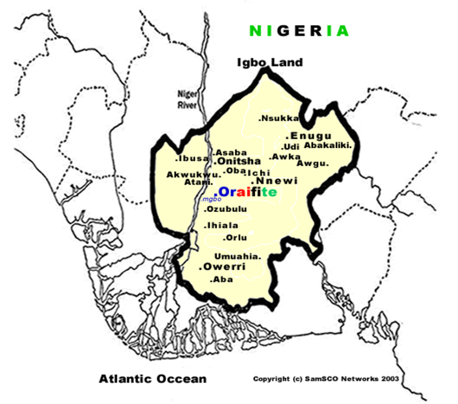
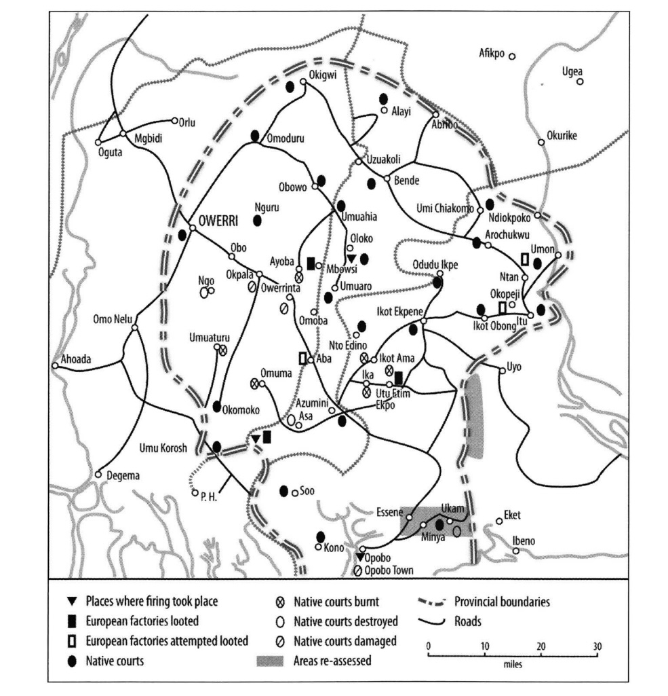
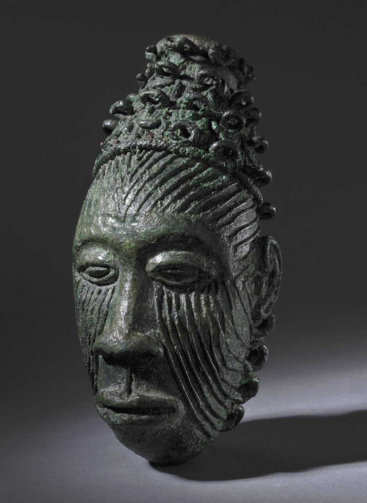
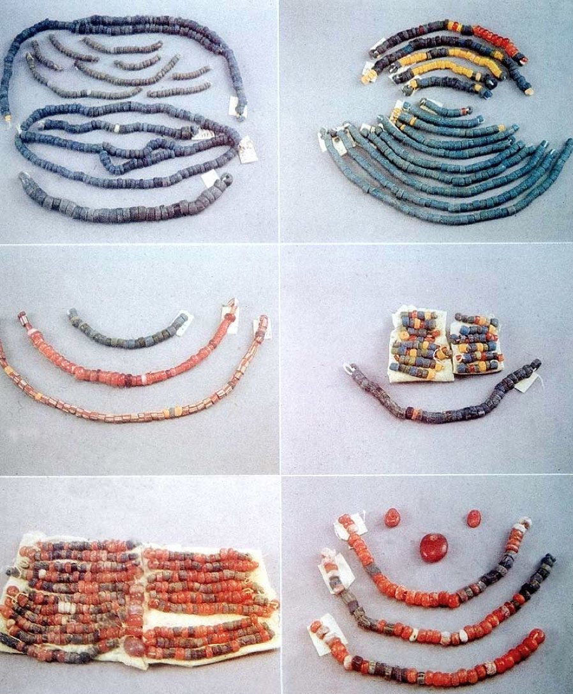
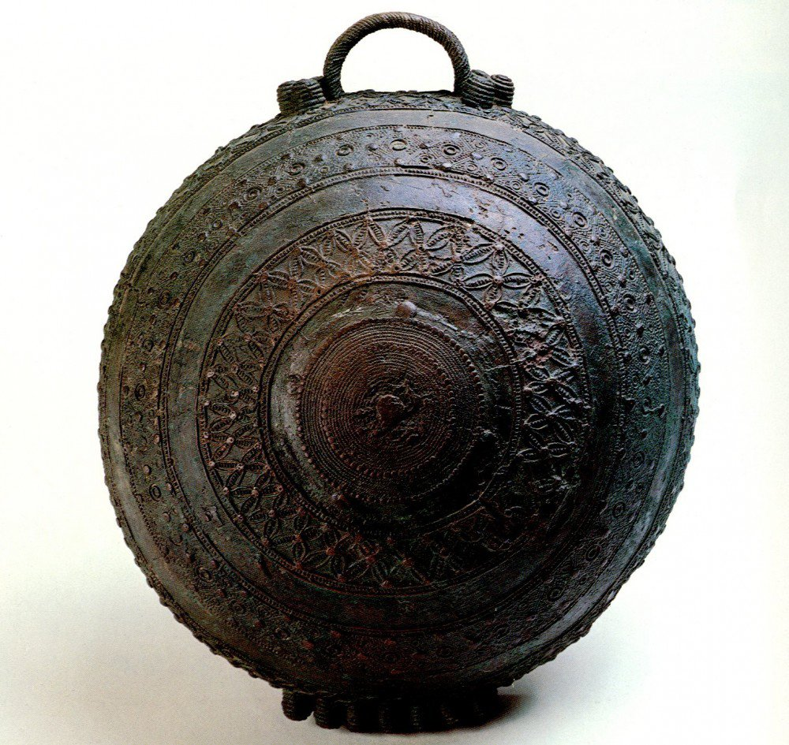
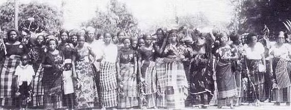
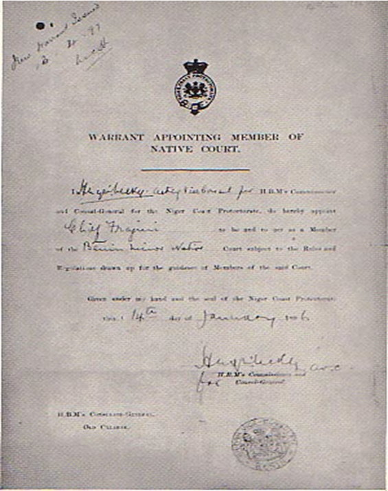
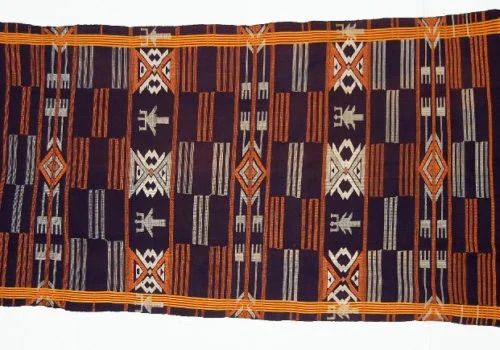
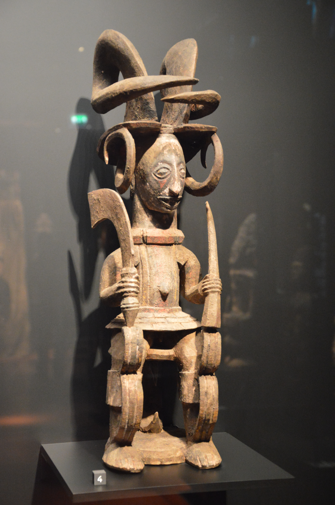
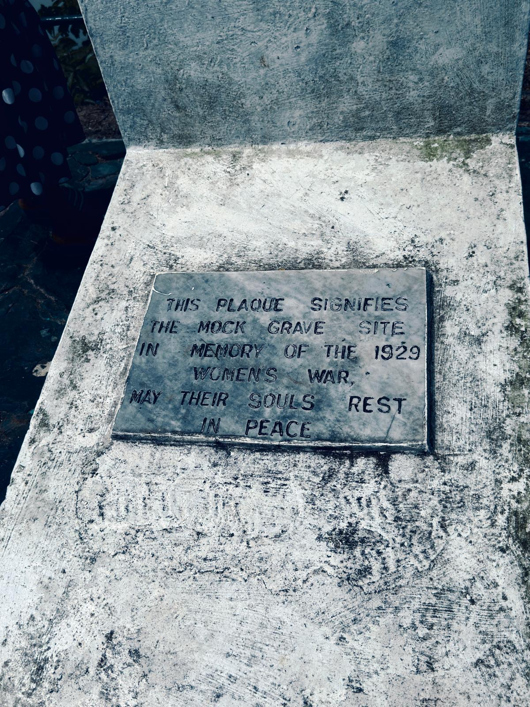

The Women’s War of 1929 did not emerge suddenly. It was the culmination of decades of growing resentment against British colonial rule in southeastern Nigeria, where colonial policies had progressively undermined indigenous political institutions, disrupted local economies, and eroded women's longstanding authority.
Before British conquest, Igbo and Ibibio women exercised significant political, economic, and social power through established institutions and systems of governance. Women organized through market associations, age grades, kinship networks, and other collective institutions that enabled them to regulate economic affairs, resolve disputes, hold leaders accountable, and challenge abuses of authority. Political power was not exclusively the preserve of men. Rather, women and men exercised authority through institutions that, while varying across communities, recognized women's important roles in public life.
British colonial rule profoundly disrupted these arrangements. Through Indirect Rule, colonial administrators appointed warrant chiefs to govern communities and preside over Native Courts. These men, many of whom lacked traditional legitimacy, exercised powers that often exceeded those of indigenous leaders. Some used their positions to extort money, impose fines, appropriate property, and intimidate the populations they governed. By concentrating political and judicial authority in the hands of men, the colonial administration marginalized women's institutions and excluded them from many of the new structures of governance. Women who had long exercised recognized political authority increasingly found themselves subjected to decisions made without their participation or consent.
Economic grievances compounded these political tensions. Women were central to agricultural production, local commerce, and the lucrative palm oil and palm kernel trades. Yet colonial economic policies and the growing influence of European trading companies threatened their livelihoods. Falling prices for palm produce, coupled with the high cost of imported goods, placed increasing pressure on households and market traders. These difficulties intensified in the late 1920s, when the colonial government introduced direct taxation on men in 1928. Although women were not formally taxed, the new financial burden affected entire households, including women whose labor and trading activities helped sustain their families.
Taxation also deepened popular distrust of the colonial administration. Before introducing the tax on men, British officials had conducted household enumeration exercises, gathering information that was subsequently used to assess taxable income. When colonial authorities ordered another enumeration in 1929, this time including information about women, children, and livestock, many women feared that they too would soon be taxed. Their suspicions were hardly unfounded: they had already witnessed how earlier counting exercises had preceded the imposition of taxation on men.
By November 1929, resentment had reached a breaking point. In Oloko, a community in the Bende Division, a man named Mark Emeruwa, acting on the instructions of Warrant Chief Okugo, approached Nwanyereuwa to obtain information about her household and possessions. Nwanyereuwa challenged his authority to count her, questioning whether women were now to be subjected to taxation. Their confrontation became the spark that ignited a much larger movement.
News of the encounter spread rapidly through women's existing networks of communication and political organization. Women gathered in markets, consulted one another, and mobilized neighboring communities. They employed established methods of collective resistance, including the powerful practice of “sitting on a man,” a form of public sanction through which women could shame, discipline, and hold men accountable for wrongdoing. Singing, dancing, chanting, surrounding offenders' compounds, and, at times, exposing their nakedness were among the methods women used to express collective condemnation and demand redress.
What began in Oloko quickly spread across southeastern Nigeria, drawing tens of thousands of Igbo, Ibibio, and other women into a sustained confrontation with colonial authority. The women challenged warrant chiefs, attacked Native Courts and other symbols of colonial power, confronted European trading companies, and demanded an end to taxation and economic exploitation. Their actions were neither spontaneous disorder nor the irrational outburst portrayed in colonial accounts. They represented a powerful mobilization rooted in established traditions of women's political organization and collective action.
The British colonial administration responded with violence. Colonial police and troops opened fire on women demonstrators at several locations, killing approximately fifty women and wounding many more. Yet the scale and determination of the uprising forced the administration to reconsider important aspects of its system of Indirect Rule. The warrant chief system was subsequently dismantled, and Native Courts and local administrative structures were reorganized, including through collective judicial arrangements known as “massed benches.” These reforms, however, did not fully restore women's political authority or end colonial domination.
Dismissively labeled the “Aba Women’s Riots” by British colonial authorities, the uprising is more appropriately remembered as the Women’s War of 1929, or Ogu Umunwanyi. The women who participated were not simply protesting the possibility of taxation. They were defending their economic livelihoods, political authority, and established systems of accountability against a colonial order that threatened to dismantle them.
The Women’s War stands as one of the most significant women-led anti-colonial uprisings in African history. It exposed the limits of British imperial power, challenged colonial representations of African women as silent and passive subjects, and demonstrated the extraordinary capacity of women to organize across communities in defense of their rights. Above all, it reminds us that African women were not merely witnesses to colonial history. They were political actors, organizers, and warriors who helped shape its course.
The encounter at Oloko: [Timestamp:] In Oloko, in present-day Abia State, Emeruwa sought to count the members of Nwayeruwa’s household and her property. Nwayeruwa, a widow, challenged him. For women who feared that counting would lead to taxation, the encounter raised a question that reached far beyond her household. As word spread, women traveled to Oloko to press their demands.
Warrant Chiefs and Indirect Rule: [Timestamp:] Under a system the British called “indirect rule,” colonial officials appointed local leaders to govern on their behalf. Often young and ambitious, these men held little traditional authority in their communities. The British warrant gave them power their communities had never granted them. Many used that power for personal gain, demanding bribes, seizing land, and imposing forced labor. Women were often particular targets of these abuses. For many women, warrant chiefs were the local face of a corrupt colonial system that threatened their livelihoods, eroded their standing in the community, and undermined the traditions through which they exercised authority.
"Sitting on a Man": [Timestamp:] To “sit on a man” was the strongest sanction Igbo women had for punishing wrongdoing. Also practiced among Ibibio women, it played a central role in the Women’s War of 1929. Women would gather at the offending man’s compound and surround his house, singing, chanting, and dancing as they named his offense and held him up to public ridicule. Sometimes they plastered the walls with mud. Sometimes they tore the house apart, thatching and all. They would draw the man out of his compound and encircle him, keeping up their songs and taunts until he acknowledged what he had done and agreed to make amends. The women could also expose their nakedness, an act whose gravity lay in Igbo understandings of motherhood and spiritual power. For a mother to bare herself publicly before the man who had wronged her was to invoke a spiritual sanction. During the Women’s War, women drew on this familiar means of holding an offender to account and turned it against warrant chiefs who exercised power in the name of the British.
Anthropology and Power: [Timestamp:] The Women’s War forced British officials to reckon with how little they knew about the people they claimed to govern. They knew which men held warrants because they had issued those warrants themselves. What they had failed to grasp was how women exercised authority. Who could call women together? How did word of a grievance travel from one community to the next? How could an encounter in Oloko bring women across southeastern Nigeria into action? After 1929, these questions took on new urgency for a colonial administration that the women had caught by surprise. The British commissioned the government anthropologist C. K. Meek to study Indigenous political and judicial institutions. Sylvia Leith-Ross and Margaret Green also undertook fieldwork on Igbo society, while the linguist Ida C. Ward pursued a separate study of language. Colonial administrative officers, meanwhile, compiled some 200 intelligence reports by 1934. The word intelligence is worth pausing over. For the women, the ability to call a meeting, carry word to neighboring communities, and act together was part of political life. For British officials, those same activities had become matters for investigation and monitoring. Officials drew on what they learned to reorganize colonial courts and local government. They also hoped to recognize the beginnings of another mobilization before women could again confront them on such a scale.

Image 1: Map of Igboland
Caption & citation for Image 1
Image 2: Map of the Women's War
Caption. Toyin Falola and Adam Paddock. The Women's War of 1929: A History of Anti-Colonial Resistance in Eastern Nigeria. Carolina Academic Press, 2011. Used by permission from Dr. Toyin Falola.

Image 3: Igbo Ukwu face pendant

Caption & citation for Image 3
Image 4: 9th century glass beads from Igbo-Ukwu

Caption & citation for Image 4
Image 5: 9th century bowl or pot

Caption & citation for Image 5
Image 6: 60th Anniversary re-enactment of Women's Protest during the Women's War of 1929

Caption & citation for Image 6
Image 7: A warrant chief's certificate

Caption. Photo taken by Nwando Achebe
Image 8: Akwete cloth

A handwoven traditional fabric skillfully made by Igbo women in Akwete, Abia State, Nigeria. Citation.
Image 9: Wooden sculpture of Ikenga

This scultpure of Ikenga, an Alusi, is at the Musée du Quai Branly. Citation.
Image 10:Women's War Memorial, Ikot Abasi

Women's War Memorial, Ikot Abasi, originally Opobo, near Lugard's House. Photo by Professor Toyin Falola.
Falola, Toyin, and Paddock, Adam, eds. The Women’s War of 1929: A History of Anti-Colonial Resistance in Eastern Nigeria. Carolina Academic Press, 2011.
Korieh, Chima J., and Elizabeth Onogwu. "Women and rural protest in colonial Eastern Nigeria: The 1929 women's revolt (ogu umunwanyi) reexamined." Journal of Women’s History 36, no. 3 (2024): 94-117. https://doi.org/10.1353/jowh.2024.a935704.
Matera, Marc, Misty L. Bastian, and Susan Kingsley Kent. The Women's War of 1929: Gender and Violence in Colonial Nigeria. Palgrave Macmillan, 2012.
Uchendu, Egodi, and Uche Okonkwo. “The Aba Women’s War of 1929 in Eastern Nigeria as Anti-colonial Protest.” The Routledge Companion to Black Women’s Cultural Histories (2021): 245-254.
Van Allen, Judith. “Aba Riots or Igbo Women’s War? Ideology, Stratification, and the Invisibility of Women.” In Women in Africa: Studies in Social and Economic Change, edited by Nancy J. Hafkin and Edna G. Bay. Stanford University Press, 1976.